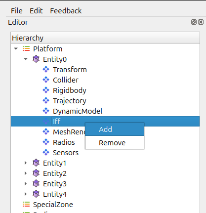
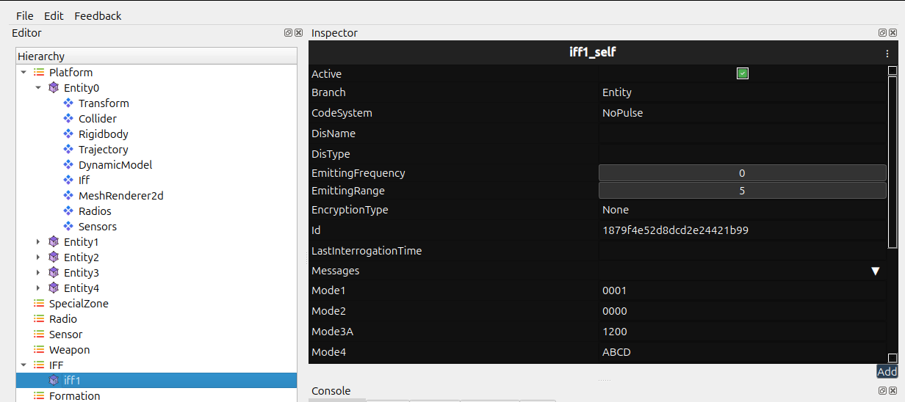
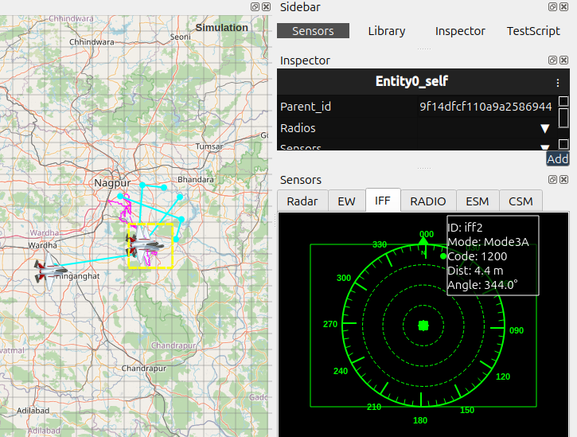

IFF
The IFF system provides a clear visual indicator of an entity’s identification status during a simulation. It helps you quickly confirm whether an entity is marked as Friendly, or Unknown, based on the IFF profile assigned to it. This is useful for situational awareness and for checking that profiles and hierarchy setups are correct.
Purpose of IFF
The IFF system helps you:
Distinguish entities visually in real time.
Confirm that each entity has the correct profile.
Verify that sensors, radars, and AI systems are referencing the right IFF status.
Creating an IFF
Select an entity from the Hierarchy.

Open the context menu or toolbar options.
{kind=link}

Choose Add IFF.
{kind=link}

Adjust the Mode configuration, Range and other fields in Inspector Tab.
How the Display Behaves
Updates in real time when an entity’s status changes.
Uses color-coded indicators (default: green = friendly, red = hostile).
Hovering over the display may show details such as entity ID, name, and IFF profile.
Refreshes automatically during the simulation.
{kind=link}

Recommended Usage
Assign IFF profiles before you start the simulation.
Use the display to double-check hierarchy relationships.
Enable the display while debugging sensors, targeting systems, or engagement logic.
Common Issues and Fixes
Display not visible
Make sure the widget was created for that entity.
Check whether the IFF Display module is enabled in the settings.
Color not updating
Restart or refresh the simulation after editing profile types.
Notes
The IFF Display is purely visual; it does not affect simulation behaviour.
It works for dynamically spawned entities as long as they receive a valid profile.